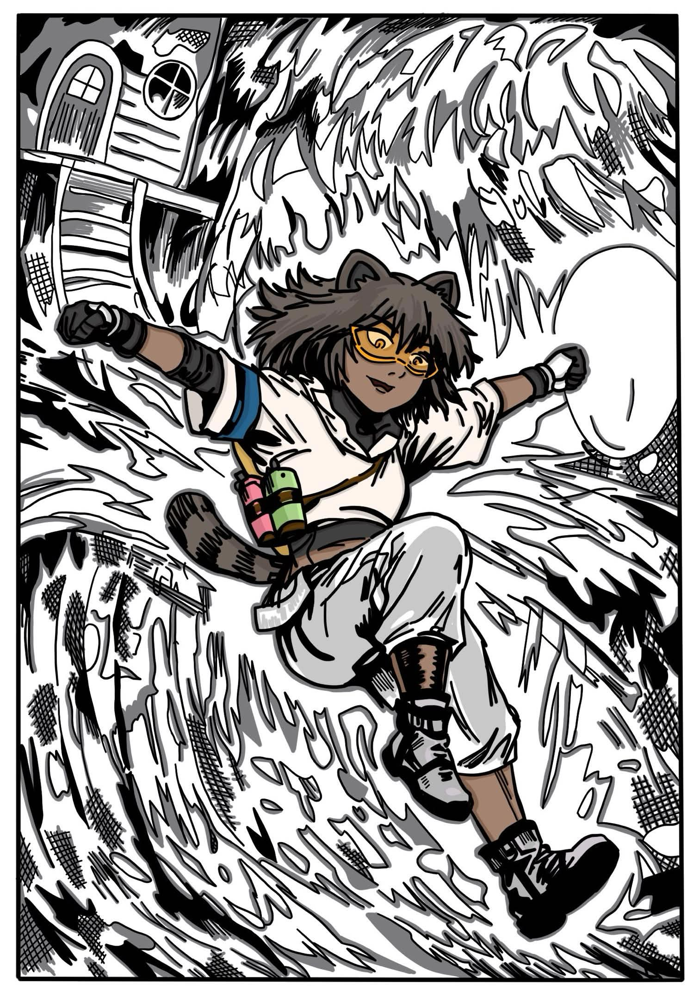

All Projects
Detailed showcase of my game development work
-

Artkana is a 3-D side-scrolling momentum-based platformer featuring a graffiti-based theme and dynamic upgrades, developed by Slipstream Studios.
I was hired as Lead Programmer for my C++ proficiency demonstrated on Reconnection. My primary role involves refactoring legacy Blueprints into organized C++ architecture, optimizing performance by freeing up Event Ticks, and creating a stable foundation for the design team.
Key Technical Contributions:
- Blueprint to C++ Refactoring: Converting complex "spaghetti code" into maintainable C++ classes.
- Upgrade System Overhaul: Redesigned the upgrade mechanics for modularity.
- Performance Optimization: Reducing overhead by optimizing actor ticks and event loops.
-

COLDSNAP is an upcoming game project from Icebreak Studios, for which I serve as contract composer. This professional composition work showcases my ability to create atmospheric and thematic music for games while managing professional deadlines.
As Composer, I am creating five original tracks that capture the game's atmosphere and enhance the player experience. This contract work demonstrates my versatility beyond programming, bringing musical artistry to game development with seamless looping and cohesive musical identity.
Original Soundtrack (3 Complete, 2 In Progress):
- Insulatus Cadmus - Atmospheric foundation track (1 week)
- Frozen Rust and Greed's Dust - Dramatic thematic composition (2 weeks)
- Infernic Flare - High-energy climactic sequence music (9 days)
- Track 4 - Scheduled for March 2026
- Track 5 - Scheduled for April 2026
Studio: Icebreak Studios
Team Role: Contract Composer
Time: February 2026 - April 2026
Focus: Original Game Music
Learn More -

Solar Scavenger is a space-themed survival game created for the FIEA Game Jam 2026. Players must escape the dying Icarus-XIII star while being pursued by scavengers and pirates in this intense 48-hour jam project.
As Lead Engineer, I engineered the chunk-based procedural generation system, resource management economy, and physics-driven ship controls. The project emphasized performance optimization through object pooling and dynamic sector loading for an infinite open-world experience.
Key Technical Contributions:
- Procedural Chunk Generation for infinite space exploration
- Adaptive Object Pooling for performance optimization
- Strategic Resource Management with scavenging gameplay
- Physics-Based Controls for realistic space movement
- Dynamic Difficulty Scaling responsive to player progress
- Adaptive Spawn System for enemies and resources
- Progressive Music that responds to game state
- Dynamic Lighting tied to in-game progression
-

Fearosis is a strategic mobile simulation game where players engineer and propagate complex threats. The title features a robust stat-based simulation engine that manages complex interactions across dynamic populations.
As Lead Engineer, I architected the core simulation systems, including a custom A* pathfinding solution and a secure binary save system. I optimized the codebase for mobile performance using object pooling and event-driven architecture to handle complex calculations on limited hardware.
Key Technical Contributions:
- Stat-Based Simulation with dynamic events and reactive spreadability
- Reactive Upgrade Tree with dynamic unlocking
- A* Pathfinding for custom agent navigation
- Dynamic Object Pooling for mobile optimization
- Secure Save System preventing data tampering
- Advanced Music Loop with seamless transitions
-

Reconnection is a narrative-driven RPG that blends social simulation with tactical turn-based combat. The project demonstrates advanced C++ architecture within Unreal Engine 5.
As Gameplay Engineer, I engineered the complete turn-based combat system using C++ parent classes with Blueprint extensibility. I developed custom tools for designers to create branching dialogue and combat encounters without code dependencies.
Key Technical Contributions:
- D&D-Inspired Combat System with automated dice rolls and stat calculations
- C++ Architecture with Blueprint-extensible parent classes
- Turn-Based State Machine for initiative management
- Custom Editor Tools for narrative designers
Team Size: 8
Team Role: Lead Engineer & Composer
Time: 5 months (WIP)
Engine: Unreal Engine 5
Learn More -

Reactive Skies is a technical showcase demonstrating real-time cloud data integration. It features a live weather system that synchronizes in-game environments with real-world meteorological data via OpenWeatherMap API.
I implemented a robust backend architecture using PlayFab for user authentication and cloud data storage. The project utilizes custom caching strategies to minimize API calls and optimize bandwidth usage.
Key Technical Contributions:
- REST API Integration with OpenWeatherMap for real-time data
- Cloud Backend Architecture using PlayFab for auth and storage
- Custom Serialization for persistent player states
-

Deadtective is a puzzle-adventure game developed for the Jamsepticeye Game Jam, where it competed against thousands of entries.
I engineered a dual-world mechanic allowing players to toggle between reality and spirit realms instantly. The system utilizes complex 2D raycasting and custom collision layers to manage interactive objects across two simultaneous game states.
Key Technical Contributions:
- Dual-World State Management with seamless switching
- Object-Oriented Interaction System for scalable puzzle mechanics
- Drag-and-Drop Inventory implementation
- Unity Input System integration with raycasting
- 2D Collision Layers for world-specific interactions
-

Bysen Says is a rhythm-action accessibility game developed for the Limbitless Solutions Super Bionic Bash. Competing against international teams, we delivered a polished musical experience in under 72 hours using Unreal Engine 5.
As a Gameplay Engineer, I engineered the rhythm verification system using Unreal's Quartz Audio Clock for sample-accurate input timing. I optimized the input pipeline to eliminate latency—critical for rhythm gameplay—and implemented a modular gamemode architecture that allowed for rapid iteration of musical patterns.
Key Technical Contributions:
- Quartz Clock Implementation for sample-accurate rhythm synchronization
- Input Latency Optimization for tight gameplay responsiveness
- Modular Gamemode Architecture for rapid minigame prototyping
- Dynamic Audio Integration linking gameplay state to music
- Accessibility-First Design ensuring inclusive player experiences
Team Size: 6
Team Role: Gameplay Engineer & Composer
Time: 3 days
Engine: Unreal Engine 5
-

Campfire Cryptid is a survival horror minigame collection that won 1st Place at the UCF Game Development Knights Summer Jam 2025. Built in just 48 hours, the project required rapid iteration and precise scope management to deliver a polished experience.
As Lead Engineer, I architected the central game state system using Scriptable Objects to manage dual timers and scene transitions without persistent data loss. I implemented the core gameplay loops for fishing, fire tending, and the climactic defense sequence, ensuring seamless interaction between varied mechanics.
Key Technical Contributions:
- Scriptable Object Architecture for global state management
- Dual-Timer System creating escalating tension
- Rapid Prototyping of multiple distinct minigames
- Raycasting & 2D Physics interaction implementation
- Dynamic UI feedback systems